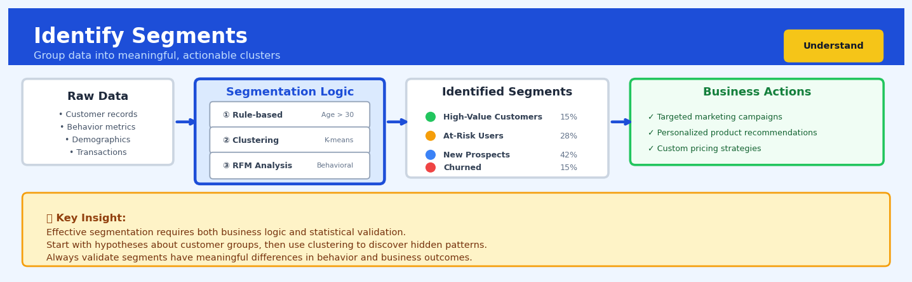

Identify Segments#


The biggest mistake teams make is creating too many segments that are statistically distinct but operationally useless. If your marketing team can't create different strategies for each segment, or if segments require 10+ features to explain, you've over-segmented. Start with 3-5 actionable segments based on clear business objectives, then refine only if you have the organizational capacity to treat each group differently.
The 60-Second Version#
What it does: Identify Segments automatically finds natural groups in your data by analyzing which customers, products, or transactions behave similarly to each other.
When to use it: When you suspect your population isn’t homogeneous—different customers want different things, different stores perform differently, or different products sell through different channels—but you don’t know how to divide them up.
What you get back: Each row in your dataset gets assigned to a segment (e.g., “Segment 1,” “Segment 2”), allowing you to profile what makes each group distinct and build different strategies for each.
Difficulty |
Moderate |
Typical runtime |
Seconds on 100K rows |
What you bring |
A dataset with numeric measures of behavior or characteristics for each entity you want to segment |
What you get |
Segment labels for each row, plus profiles describing what makes each segment unique |
Heuristix bucket |
Understand — Statistical Analysis & Profiling |
The algorithm finds patterns, but you must decide if those patterns are meaningful and actionable for your business.
Learning Objectives#
After reading this chapter, a business user will be able to:
Recognize when customer or product heterogeneity requires segmentation rather than aggregate analysis, and identify business scenarios where discovering natural groupings creates actionable value.
Interpret segment profiles by reading cluster characteristics tables and visualizations, then articulate what distinguishes each segment in plain language for executive stakeholders.
Prioritize business actions by selecting which segments to target, customize, or deprioritize based on their size, characteristics, and strategic relevance to organizational goals.
After reading this chapter, a data scientist will be able to:
Implement k-means clustering with proper data preprocessing (scaling, encoding, dimensionality considerations) and select appropriate distance metrics for different variable types.
Determine the optimal number of clusters by applying multiple evaluation methods (elbow method, silhouette analysis, business constraints) and balancing statistical fit against interpretability.
Validate segmentation quality by assessing cluster stability, separation, and cohesion metrics, and diagnose problems like sensitivity to initialization, outlier domination, or meaningless mathematical artifacts.
Overview#
Identify Segments is an unsupervised learning technique that discovers natural groupings within a dataset by partitioning observations into clusters such that members within each cluster are more similar to one another than to members of other clusters. Its core purpose is to reveal latent structure in data without relying on predefined labels, enabling analysts to understand heterogeneity in populations, identify distinct behavioural profiles, and tailor strategies to homogeneous subgroups. This technique belongs to the family of cluster analysis methods, with k-means clustering serving as the foundational algorithm, complemented by hierarchical clustering, DBSCAN, and Gaussian mixture models for different data characteristics and analytical requirements.
When to Use This#
Use this when you need to discover natural customer segments — When you have transactional, demographic, or behavioural data and want to identify distinct customer types without prior knowledge of what those types might be, segmentation reveals actionable groups for targeted marketing or product development.
Use this when you want to simplify a large, heterogeneous population — When dealing with thousands of entities (customers, products, transactions) that exhibit diverse characteristics, clustering reduces complexity by identifying a manageable number of representative archetypes.
Use this when you need to personalise interventions at scale — When one-size-fits-all strategies underperform, segments enable differentiated treatment plans, pricing tiers, or communication strategies tailored to each group’s characteristics.
Use this when exploring data for hypothesis generation — When you lack strong prior theories about population structure, clustering serves as an exploratory tool that surfaces patterns worthy of deeper investigation.
Use this when you need to identify anomalous groups — When some clusters emerge as small, unusual, or extreme, they may warrant special attention as potential fraud rings, high-value niches, or at-risk populations.
Use this when you want to reduce dimensionality for downstream modelling — When cluster membership is used as a feature in supervised models, it captures nonlinear interactions and population heterogeneity that linear features cannot.
Do NOT use this when you have labelled data and a clear prediction target — If you already know the outcome you want to predict and have historical labels, supervised learning methods will outperform unsupervised clustering.
Do NOT use this when the number of segments is contractually or operationally fixed — If business constraints dictate exactly how many groups you must have, and those groups have specific definitions, rule-based assignment is more appropriate than data-driven discovery.
Do NOT use this when your features are predominantly categorical with high cardinality — Standard k-means assumes continuous, Euclidean-measurable features; categorical data requires specialised algorithms like k-modes or latent class analysis.
Do NOT use this when interpretability of segment definitions is non-negotiable and clusters are complex — If stakeholders require simple, rule-based segment definitions, the boundaries discovered by clustering may be too intricate to operationalise without post-hoc profiling.
Questions This Answers#
Understanding Customer Diversity#
Who are our actual customer groups, and what makes each one different from the others?
Are we treating all our customers the same when we should be approaching them differently?
Which customers behave similarly enough that we can serve them with the same strategy?
Why are some customers spending 10x more than others — are they fundamentally different types of buyers?
Do we have distinct regional markets that need separate product mixes and marketing approaches?
Targeting and Personalization#
Which customer segments should we prioritize for our new premium product line?
How many different email campaigns do we actually need to run to reach our entire customer base effectively?
Are there high-value customer groups we’re completely missing with our current marketing messages?
Should we be offering different pricing or promotions to different types of customers?
Which segment is most likely to respond to our retention offers versus our acquisition campaigns?
Can we identify a group of at-risk customers who need intervention before they churn?
Resource Allocation and Strategy#
Where should we focus our limited sales team resources to maximize revenue growth?
Are there underserved market segments we should expand into next year?
Which customer groups are unprofitable and draining resources from our high-value segments?
Should we split our product development roadmap to serve different customer needs, or keep one unified offering?
How It Works#
Imagine you’re a teacher organizing 30 students for a field trip, and you need to split them into groups for different activities. You don’t have pre-assigned teams, but you notice patterns: some students always sit together at lunch, some share the same hobbies, some live in the same neighbourhood. Instead of randomly grouping them, you watch their natural affinities—who talks to whom, who shares interests, who lives nearby—and create groups where friends end up together. The result feels natural because you’ve discovered existing social structures rather than imposing arbitrary divisions.
BEFORE: Unstructured Data Points IDENTIFY SEGMENTS PROCESS
Height → Step 1: Pick number of groups (k=3)
│ × ×
│ × × × Step 2: Place initial center points
│ × randomly (★)
│ ×× × × ×
│ × × Step 3: Assign each point to
│ × × nearest center
│ × × ×
│ × × × Step 4: Move centers to middle
│ × × × of their groups
└──────────────────→ Weight
Step 5: Repeat until stable
AFTER: Discovered Segments
Height →
│ A C Segment A (Light):
│ A C C Short & light people
│ A
│ AA C B B Segment B (Tall):
│ C B Tall people
│ A C
│ A C B Segment C (Heavy):
│ A A B Heavier people
│ A C B
└──────────────────→ Weight
Step 1: Choose how many groups you want to find. You tell the algorithm you’re looking for three segments, or five, or ten—whatever makes sense for your business question. This is like deciding you want small discussion groups of five students each versus three larger activity teams.
Step 2: Place initial “center points” randomly in your data. The algorithm drops markers into your dataset—one for each segment you requested. Think of these as temporary team captains placed at random locations among your students. Their initial positions don’t matter much because they’ll move.
Step 3: Assign every observation to its nearest center point. Each customer, transaction, or data point gets tagged with whichever center point is closest to it based on the features you’re measuring. Students get assigned to whichever captain they’re standing nearest to on the playground.
Step 4: Move each center point to the middle of its newly formed group. Calculate the average position of all points now assigned to each center, and shift that center to this average location. The team captains walk to the geographic middle of their temporary teams.
Step 5: Repeat the assignment and movement process. Keep assigning points to their nearest (now-moved) centers, then moving centers to the middle of their groups. Do this over and over. With each iteration, the groups stabilize as centers find the true “heart” of natural clusters.
Step 6: Stop when nothing changes anymore. Eventually, reassigning points doesn’t move the centers, and moving centers doesn’t change assignments. You’ve found stable segments. Each group now contains members who genuinely resemble each other more than they resemble members of other groups.
The key insight: By repeatedly pulling center points toward the middle of their groups while simultaneously reassigning members to the nearest center, the algorithm discovers where dense concentrations of similar observations naturally exist in your data.
The Intuition#
Imagine you are a botanist who has collected measurements from hundreds of flowers — petal length, petal width, sepal length, sepal width — but you do not know which species each flower belongs to. If you plotted all these flowers in a four-dimensional space defined by their measurements, you would notice that the points are not uniformly scattered. Instead, they form clumps: flowers of the same species tend to cluster together because they share similar physical characteristics. Segmentation algorithms formalise this intuition by finding the centres of these clumps and assigning each flower to its nearest centre.
The key insight is that similarity within a group and dissimilarity between groups are two sides of the same coin. A good segmentation minimises the internal variation within each cluster (members are tightly packed around their centre) while maximising the separation between clusters (centres are far apart). Think of it like organising a library: you want books on the same shelf to be about related topics, and you want different shelves to cover distinct subject areas. The librarian does not need a predefined catalogue — by examining the content of each book and grouping similar ones together, a natural organisational structure emerges.
The iterative nature of most clustering algorithms mirrors how a human might approach the problem. Start with an initial guess about where the cluster centres might be. Then, assign each observation to its nearest centre. Once all assignments are made, recalculate each centre as the average of its assigned members. Repeat this process — reassigning and recentering — until the assignments stabilise. This alternating optimisation converges because each step either reduces or maintains the total distance between observations and their assigned centres, and this quantity is bounded below by zero.
The Mathematics#
Problem Formulation#
Let \(\mathbf{X} = \{\mathbf{x}_1, \mathbf{x}_2, \ldots, \mathbf{x}_n\}\) denote a dataset of \(n\) observations, where each observation \(\mathbf{x}_i \in \mathbb{R}^p\) is a \(p\)-dimensional feature vector. The goal of clustering is to partition these observations into \(K\) disjoint clusters \(C_1, C_2, \ldots, C_K\) such that:
Each cluster \(C_k\) is associated with a centroid \(\boldsymbol{\mu}_k \in \mathbb{R}^p\), representing the centre of mass of the cluster.
The K-Means Objective Function#
K-means clustering minimises the within-cluster sum of squares (WCSS), also known as inertia:
where \(\|\cdot\|\) denotes the Euclidean (L2) norm. This objective measures the total squared distance between each observation and its assigned cluster centroid.
The Lloyd Algorithm#
The standard k-means algorithm, due to Lloyd (1982), alternates between two steps until convergence:
Assignment Step: Given current centroids \(\{\boldsymbol{\mu}_k\}_{k=1}^{K}\), assign each observation to the nearest centroid:
Update Step: Given current cluster assignments, recompute centroids as cluster means:
Convergence Properties#
The algorithm is guaranteed to converge because:
Each assignment step cannot increase \(J\) (each point moves to a closer centroid or stays)
Each update step minimises \(J\) with respect to centroids for fixed assignments
\(J\) is bounded below by zero
However, k-means converges to a local minimum, not necessarily the global minimum. The solution depends on initialisation.
Initialisation: K-Means++#
The k-means++ initialisation (Arthur & Vassilvitskii, 2007) selects initial centroids with probability proportional to squared distance from existing centroids:
Choose \(\boldsymbol{\mu}_1\) uniformly at random from \(\mathbf{X}\)
For \(k = 2, \ldots, K\), choose \(\boldsymbol{\mu}_k = \mathbf{x}_i\) with probability:
where \(D(\mathbf{x}_i) = \min_{j < k} \|\mathbf{x}_i - \boldsymbol{\mu}_j\|\) is the distance to the nearest existing centroid.
This initialisation provides an \(O(\log K)\) approximation guarantee to the optimal solution in expectation.
Assumptions#
Spherical clusters: K-means assumes clusters are roughly spherical (isotropic variance) because it uses Euclidean distance
Similar cluster sizes: The algorithm tends to produce clusters of similar size due to Voronoi partitioning
Continuous features: The Euclidean mean is undefined for categorical variables
Known \(K\): The number of clusters must be specified a priori
Selecting the Number of Clusters#
Elbow Method: Plot WCSS against \(K\) and look for an “elbow” where the rate of decrease sharply changes:
Silhouette Score: For each observation \(i\), compute:
where \(a(i)\) is the mean intra-cluster distance and \(b(i)\) is the mean distance to the nearest cluster. Values range from \(-1\) to \(+1\), with higher values indicating better-defined clusters.
Gap Statistic: Compares the observed WCSS to that expected under a null reference distribution:
where the expectation is computed via Monte Carlo sampling from a uniform distribution over the data range.
Relationship to Gaussian Mixture Models#
K-means is equivalent to a Gaussian Mixture Model (GMM) with equal, isotropic covariances in the limit as variance approaches zero. GMMs generalise k-means by allowing:
where \(\pi_k\) are mixing proportions and \(\boldsymbol{\Sigma}_k\) are full covariance matrices, enabling ellipsoidal clusters of varying shapes and sizes.
Edge Cases#
Empty clusters: If a cluster loses all members during assignment, the algorithm may fail. Common remedies include reinitialising the empty centroid or removing it.
Tied distances: When an observation is equidistant from multiple centroids, arbitrary assignment (typically to the lower-indexed cluster) occurs.
Degenerate solutions: With \(K > n\), some clusters will necessarily be empty or contain single points.
Understanding the Mathematics#
The Euclidean Distance Formula#
The equation:
Read it aloud:
“The distance between observation i and observation j equals the square root of the sum of squared differences across all p features.”
What each symbol means:
\(d(x_i, x_j)\) = the distance between two data points (customers, products, etc.)
\(x_i\), \(x_j\) = two different observations in your dataset
\(p\) = the total number of features you’re measuring
\(x_{ik}\) = the value of feature k for observation i
\(x_{jk}\) = the value of feature k for observation j
\(\sum\) = add up everything that follows
Square root and squared = mathematical operations to ensure distance is always positive
A concrete numerical example:
Imagine two customers. Customer 1: age = 35, annual spend = \(2,000, visits = 12. Customer 2: age = 42, annual spend = \)2,500, visits = 8. The distance is:
Why this equation matters:
Without a mathematical definition of “closeness,” we cannot objectively group similar customers together—clustering would be arbitrary guesswork rather than data-driven segmentation.
The Cluster Center (Centroid)#
The equation:
Read it aloud:
“The center of cluster C equals the average of all observations assigned to that cluster.”
What each symbol means:
\(\mu_c\) = the centroid (center point) of cluster C
\(|C|\) = the number of observations in cluster C
\(\sum_{x_i \in C}\) = sum over all observations i that belong to cluster C
\(x_i\) = each individual observation (a vector of all its feature values)
A concrete numerical example:
Suppose cluster “High-Value” contains three customers:
Customer A: age = 45, spend = $5,000
Customer B: age = 50, spend = $6,000
Customer C: age = 52, spend = $5,500
The centroid is:
The “typical” high-value customer is 49 years old and spends $5,500.
Why this equation matters:
The centroid represents the profile of each segment—if we can’t compute a representative center, we can’t describe who belongs in each group or target them with tailored strategies.
The Within-Cluster Sum of Squares#
The equation:
Read it aloud:
“The total within-cluster variation equals the sum, across all k clusters, of the squared distances between each observation and its assigned cluster center.”
What each symbol means:
\(WCSS\) = within-cluster sum of squares (our measure of cluster compactness)
\(k\) = the number of clusters we’ve created
\(C_c\) = cluster c
\(\mu_c\) = the centroid of cluster c
\(d(x_i, \mu_c)^2\) = the squared distance from observation i to its cluster center
A concrete numerical example:
Suppose we have two clusters. Cluster 1 has two customers at distances 10 and 15 from their centroid. Cluster 2 has two customers at distances 8 and 12 from their centroid.
Why this equation matters:
This single number tells us how “tight” our clusters are—lower values mean we’ve found segments where members truly resemble each other, making our segmentation actionable rather than arbitrary.
The Big Picture#
The mathematics of clustering is fundamentally trying to solve an optimization problem: partition your data so that similar observations share a group while dissimilar ones separate. We need Euclidean distance because human intuition about “similar customers” must become a precise, computable number that algorithms can minimize. The centroid equation gives us a representative for each segment, while WCSS provides a score that tells us whether our groupings are meaningful or random. Taken together, these equations transform the fuzzy concept of “finding natural groups” into a concrete procedure: repeatedly reassign observations to their nearest center and recalculate centers until assignments stabilize and WCSS stops decreasing. In one sentence: clustering mathematics formalizes the intuitive idea that birds of a feather flock together by measuring exactly how close those birds are and defining the center of each flock.
Python Implementation#
import numpy as np
import pandas as pd
from sklearn.cluster import KMeans
from sklearn.preprocessing import StandardScaler
from sklearn.metrics import silhouette_score, calinski_harabasz_score
import matplotlib.pyplot as plt
# Generate realistic synthetic customer data
np.random.seed(42)
n_customers = 1000
# Create three distinct customer segments
# Segment 1: High value, low frequency (Premium customers)
seg1 = np.random.multivariate_normal(
mean=[500, 2, 50000, 45], # avg_order, orders_per_month, annual_spend, age
cov=np.diag([100, 0.5, 10000, 25]),
size=200
)
# Segment 2: Low value, high frequency (Regular customers)
seg2 = np.random.multivariate_normal(
mean=[50, 8, 5000, 35],
cov=np.diag([15, 2, 1000, 36]),
size=500
)
# Segment 3: Medium value, medium frequency (Growth customers)
seg3 = np.random.multivariate_normal(
mean=[150, 4, 15000, 30],
cov=np.diag([30, 1, 3000, 49]),
size=300
)
# Combine and create DataFrame
data = np.vstack([seg1, seg2, seg3])
df = pd.DataFrame(data, columns=['avg_order_value', 'orders_per_month',
'annual_spend', 'customer_age'])
# Ensure non-negative values (realistic constraint)
df = df.clip(lower=0)
print("Dataset shape:", df.shape)
print("\nFeature statistics:")
print(df.describe().round(2))
# Step 1: Standardise features (critical for k-means)
scaler = StandardScaler()
X_scaled = scaler.fit_transform(df)
# Step 2: Determine optimal number of clusters using elbow method
wcss = []
silhouette_scores = []
K_range = range(2, 11)
for k in K_range:
kmeans = KMeans(n_clusters=k, init='k-means++', n_init=10,
random_state=42, max_iter=300)
kmeans.fit(X_scaled)
wcss.append(kmeans.inertia_)
silhouette_scores.append(silhouette_score(X_scaled, kmeans.labels_))
# Display evaluation metrics
print("\n" + "="*60)
print("CLUSTER EVALUATION METRICS")
print("="*60)
eval_df = pd.DataFrame({
'K': list(K_range),
'WCSS': wcss,
'Silhouette': silhouette_scores
})
print(eval_df.round(4).to_string(index=False))
# Step 3: Fit final model with optimal K=3
optimal_k = 3
kmeans_final = KMeans(n_clusters=optimal_k, init='k-means++',
n_init=10, random_state=42)
df['segment'] = kmeans_final.fit_predict(X_scaled)
# Step 4: Profile the segments
print("\n" + "="*60)
print("SEGMENT PROFILES")
print("="*60)
segment_profiles = df.groupby('segment').agg({
'avg_order_value': ['mean', 'std'],
'orders_per_month': ['mean', 'std'],
'annual_spend': ['mean', 'std'],
'customer_age': ['mean', 'std']
}).round(2)
print(segment_profiles)
# Segment sizes
print("\nSegment Sizes:")
print(df['segment'].value_counts().sort_index())
# Step 5: Retrieve cluster centroids (in original scale)
centroids_scaled = kmeans_final.cluster_centers_
centroids_original = scaler.inverse_transform(centroids_scaled)
centroids_df = pd.DataFrame(
centroids_original,
columns=['avg_order_value', 'orders_per_month', 'annual_spend', 'customer_age'],
index=[f'Segment {i}' for i in range(optimal_k)]
)
print("\nCluster Centroids (Original Scale):")
print(centroids_df.round(2))
# Step 6: Assign interpretable segment names based on profiles
segment_names = {0: 'Premium', 1: 'Regular', 2: 'Growth'}
df['segment_name'] = df['segment'].map(segment_names)
# Final quality metrics
print("\n" + "="*60)
print("FINAL MODEL QUALITY")
print("="*60)
print(f"Within-Cluster Sum of Squares: {kmeans_final.inertia_:.2f}")
print(f"Silhouette Score: {silhouette_score(X_scaled, kmeans_final.labels_):.4f}")
print(f"Calinski-Harabasz Index: {calinski_harabasz_score(X_scaled, kmeans_final.labels_):.2f}")
Alternative: Hierarchical Clustering with Dendrogram#
from scipy.cluster.hierarchy import dendrogram, linkage, fcluster
from scipy.spatial.distance import pdist
# Compute hierarchical clustering using Ward's method
# Ward's method minimises within-cluster variance (same objective as k-means)
Z = linkage(X_scaled, method='ward')
# Cut the dendrogram at a level that produces 3 clusters
df['hierarchical_segment'] = fcluster(Z, t=3, criterion='
## Visualisations


## Using This in Heuristix
### What Data You'll Need
The Identify Segments node expects **clean, numerical data** where each row represents an observation you want to cluster (like customers, products, or transactions) and each column represents a feature to cluster on.
**Input requirements:**
- At least one numerical column (the features you're clustering by)
- Optional: an ID column to track which observations belong to which segment
- Typically 100+ rows for meaningful patterns (though it works with fewer)
**Example input data:**
| customer_id | avg_purchase | visit_frequency | days_since_last |
|-------------|--------------|-----------------|-----------------|
| C001 | 145.20 | 12 | 5 |
| C002 | 89.50 | 3 | 45 |
| C003 | 310.00 | 24 | 2 |
### Configuration Parameters
| Parameter | What It Controls | Sensible Default | When to Adjust |
|-----------|-----------------|------------------|----------------|
| **Number of Clusters (k)** | How many segments to create | 3-5 | Start with 3-4 for simplicity. Increase if you need finer segmentation. Use the Elbow Chart output to guide this decision. |
| **Features to Include** | Which columns drive the clustering | All numerical columns | Exclude ID fields and irrelevant metrics. Include only variables that define meaningful similarity. |
| **Clustering Method** | Algorithm used (k-means, hierarchical, DBSCAN) | k-means | Use k-means for speed and simplicity. Try hierarchical when you want to see nested relationships. DBSCAN when you expect unusual cluster shapes or outliers. |
| **Standardize Features** | Whether to normalize data to same scale | On (recommended) | Keep ON unless all features already share the same scale and range—otherwise features with larger numbers will dominate. |
| **Random Seed** | Makes results reproducible | 42 | Change if you want to test stability across different initializations. Same seed = same results. |
### What You'll Get as Output
**New columns added to your data:**
- `segment_id`: A categorical label (1, 2, 3, etc.) indicating which cluster each row belongs to
- `distance_to_center`: How far each observation is from its assigned cluster center (useful for finding outliers within segments)
**Visualizations displayed:**
- **Segment Distribution Chart**: Bar chart showing how many observations fall into each segment
- **Elbow Chart**: Helps you choose the right number of clusters by showing where adding more clusters stops improving fit
- **Feature Comparison Chart**: Side-by-side comparison of average feature values for each segment (this is gold for profiling!)
- **2D Cluster Map**: If you have many features, this shows a dimensionality-reduced view so you can visually see cluster separation
**Summary statistics:**
- Silhouette score (0-1 scale; higher = better-defined clusters)
- Cluster centers (the "average profile" of each segment)
### Connecting Downstream
After segmentation, you'll typically connect to:
- **Filter Data** node: To isolate one segment for deeper analysis
- **Profile Statistics** node: To generate detailed descriptive statistics for each segment
- **Build Classifier** node: To create a model that predicts segment membership for new data
- **Visualize Distribution** node: To explore how other variables differ across segments
### Quick Start Recipe
1. **Connect your dataset** containing the customer or entity features you want to segment by
2. **Select 3-5 meaningful features** (e.g., purchase frequency, average order value, recency)
3. **Keep standardization ON** and start with **k=3 clusters**
4. **Run the node** and examine the Elbow Chart—look for the "bend" where the line levels off
5. **Adjust k** if needed based on the elbow point and your business need for granularity
6. **Review the Feature Comparison Chart** to name and interpret each segment
7. **Connect to Profile Statistics** to build detailed segment personas
### Pro Tips
**Start simple, then refine.** Your first pass should use just 3-4 of your most important features. Add complexity only after you understand the basic patterns.
**Name your segments immediately.** As soon as you see the feature profiles, give them business-friendly names like "Frequent Big Spenders" or "At-Risk Dormant" rather than "Cluster 2."
**Watch for unbalanced segments.** If one cluster contains 95% of your data, you've probably got too many clusters or need to remove an outlier-heavy feature.
**Use distance_to_center to find edge cases.** Observations with high distance scores are unusual members of their segment—worth investigating individually.
**Clustering is exploratory.** Don't expect perfect, clean groups. The goal is insight, not precision. If segments make intuitive business sense, they're useful even if the statistics aren't perfect.
## Config Recipes
### Recipe 1: Quick Exploration
- **When to use:** Initial data exploration when you don't know how many natural groups exist and need rapid iteration across multiple k values.
- **Settings:**
| Parameter | Value | Why |
|-----------|-------|-----|
| `algorithm` | `"k-means"` | Fastest for initial scans |
| `k_range` | `range(2, 11)` | Tests 2–10 clusters without overwhelming choice |
| `n_init` | `3` | Reduces computation while maintaining stability |
| `max_iter` | `100` | Sufficient for convergence on clean data |
| `random_state` | `42` | Ensures reproducibility |
| `standardize` | `True` | Prevents scale dominance |
- **What you get:** Fast silhouette scores and elbow plots across multiple k values, identifying promising cluster counts within minutes.
- **Trade-off:** Lower n_init means less protection against poor centroid initialization; may miss optimal solutions on complex data.
---
### Recipe 2: Production-Grade Segmentation
- **When to use:** Final customer segmentation model for automated targeting, pricing tiers, or personalization engines where stability and reproducibility are critical.
- **Settings:**
| Parameter | Value | Why |
|-----------|-------|-----|
| `algorithm` | `"k-means++"` | Smart initialization reduces variance |
| `k` | `[determined from exploration]` | Fixed value from validated analysis |
| `n_init` | `50` | High runs ensure global optimum |
| `max_iter` | `500` | Guarantees convergence |
| `tol` | `1e-6` | Tight tolerance for stability |
| `random_state` | `[fixed seed]` | Exact reproducibility |
| `validation_split` | `0.2` | Holdout set for stability testing |
- **What you get:** Highly stable cluster assignments with minimal variation across runs; assignments robust to small data changes.
- **Trade-off:** 10–15× slower than exploration settings; requires predetermined k value from prior analysis.
---
### Recipe 3: High-Dimensional Sparse Data
- **When to use:** Text embeddings, one-hot encoded categorical variables, or genomic data where Euclidean distance breaks down and most features are zero.
- **Settings:**
| Parameter | Value | Why |
|-----------|-------|-----|
| `algorithm` | `"MiniBatchKMeans"` | Handles large sparse matrices efficiently |
| `distance_metric` | `"cosine"` | Better than Euclidean for sparse/directional data |
| `n_init` | `10` | Balance between speed and quality |
| `batch_size` | `1024` | Efficient memory use for large datasets |
| `dimensionality_reduction` | `"TruncatedSVD"` | PCA alternative for sparse matrices |
| `n_components` | `50` | Captures variance while reducing noise |
- **What you get:** Clusters based on directional similarity rather than absolute distance; scalable to millions of observations.
- **Trade-off:** MiniBatch approximation introduces slight randomness; results less deterministic than standard k-means even with fixed seed.
---
### Recipe 4: Time-Series Pattern Discovery
- **When to use:** Grouping customer purchase rhythms, sensor patterns, or usage sequences where shape matters more than absolute values—surprisingly effective for behavioral fingerprinting.
- **Settings:**
| Parameter | Value | Why |
|-----------|-------|-----|
| `algorithm` | `"KMeans"` on transformed features | Applies to engineered time features |
| `feature_engineering` | `["FFT_coefficients", "autocorrelation", "trend_slope"]` | Captures temporal structure |
| `k` | `5–8` | Time patterns typically have fewer natural groups |
| `distance_metric` | `"euclidean"` post-transform | Valid after feature engineering |
| `standardize` | `"per_series"` | Normalizes each sequence independently |
- **What you get:** Clusters representing distinct temporal behaviors (e.g., "weekend spiker," "steady user," "declining engagement") rather than magnitude differences.
- **Trade-off:** Requires domain-specific feature engineering upfront; raw time-series values would produce meaningless clusters.
## Business Applications
**Financial Services**
A mid-sized UK mortgage lender with 150,000 customers struggled to differentiate its retention strategy across a diverse portfolio. By applying cluster analysis to behavioural data—payment consistency, product usage, contact frequency, and life events—the lender identified seven distinct customer segments, from "financially stretched young families" to "equity-rich downsizers." Tailoring communication cadence and product offers to each segment reduced attrition by 23% and increased cross-sell conversion from 4.2% to 7.8% within nine months, generating £3.4M in additional annual revenue.
**Retail**
An omnichannel fashion retailer with 450 stores and 8M annual transactions couldn't understand why identical promotions performed wildly differently across locations. Segmentation analysis on basket composition, visit frequency, channel preference, and price sensitivity revealed six shopping archetypes including "showroom browsers" (research in-store, buy online) and "convenience seekers" (proximity-driven, full-price). Customising markdown timing and inventory allocation to store-level segment profiles cut excess stock by 31% and lifted same-store sales growth from 2.1% to 5.9% year-over-year.
**Healthcare**
A regional hospital network serving 280,000 patients faced escalating emergency department costs driven by frequent utilisers. Clustering patient records by visit patterns, comorbidities, social determinants, and discharge destinations identified four high-risk groups, including a 1,200-patient segment with untreated mental health conditions averaging 14 ED visits annually. Deploying targeted case management and community partnerships for this segment alone reduced their ED utilisation by 47% and saved $2.8M in twelve months.
**Insurance**
A commercial property insurer underwriting 12,000 small business policies couldn't explain loss ratio variance of 40–110% across seemingly similar accounts. Segmenting policyholders by claims history, building characteristics, operational patterns, and geographic exposure uncovered five risk profiles invisible in traditional rating models. Re-pricing based on segment-specific loss expectations improved combined ratio from 103% to 94%, delivering $14M in underwriting profit improvement and enabling competitive pricing on desirable segments.
**Manufacturing**
A global aerospace components manufacturer with 340 production machines experienced unpredictable downtime despite preventive maintenance schedules. Clustering machines by vibration signatures, operating temperature patterns, utilisation intensity, and environmental conditions revealed six distinct "wear archetypes" requiring different maintenance approaches. Transitioning from calendar-based to segment-specific predictive maintenance reduced unplanned downtime by 42% and extended component life by an average of 18 months, saving $6.7M annually.
**Logistics**
A last-mile delivery company managing 85,000 daily parcels across metropolitan areas couldn't optimise routes efficiently due to address-level variability. Segmenting delivery points by access characteristics, recipient availability patterns, package volume trends, and geographic density created nine "delivery personality" clusters. Routing algorithms tuned to segment behaviours—such as "business district lunchtime clusters" versus "residential evening-only zones"—cut average delivery time from 4.2 to 2.8 minutes per stop, enabling 12% more deliveries per driver shift.
**Marketing**
A B2B SaaS company with 8,400 trial users converting at just 3.2% couldn't identify why most prospects churned during onboarding. Clustering users by feature engagement patterns, time-to-first-value, support interactions, and demographic firmographics revealed that "explorers" (broad shallow engagement) and "specialists" (deep single-feature use) required radically different nurture sequences. Implementing segment-specific onboarding emails and in-app guidance lifted trial-to-paid conversion to 8.1%, adding $3.9M in annual recurring revenue.
**Telecommunications**
A mobile network operator with 4.3M subscribers couldn't predict churn despite demographic and usage data. Segmentation incorporating call pattern variability, network quality experience, billing inquiry types, and competitive offer exposure identified a 340,000-customer "silent switcher" segment—low complaint rates but high churn risk. Proactive retention offers targeting this segment three weeks before typical defection windows reduced churn in the group by 29% and prevented $18M in annual revenue loss.
**Energy**
A natural gas utility serving 620,000 residential customers wanted to reduce demand volatility without blanket peak pricing. Clustering households by consumption patterns, thermostat behaviour, dwelling characteristics, and price responsiveness revealed seven usage archetypes, including "thermal cyclers" highly responsive to time-of-use signals. Targeted demand response programs customised to segment preferences reduced winter peak demand by 11% while maintaining 87% customer satisfaction—avoiding $22M in infrastructure upgrades.
**Public Sector**
A metropolitan fire department analyzing 14,000 annual emergency calls noticed resource misallocation across neighbourhoods. Segmenting districts by incident type mix, response time patterns, building density, and demographic factors identified five service demand profiles. Repositioning apparatus and cross-training crews based on segment-specific needs reduced average response time from 6.2 to 4.7 minutes and improved coverage uniformity by 34%.
**SaaS/Tech (Surprising Application)**
A developer tools platform with 56,000 free-tier users couldn't prioritise product roadmap investments. Clustering users by API call patterns, error frequencies, feature combinations, and time-of-day usage revealed that their fastest-growing segment ("automation engineers") used the product in completely unexpected ways—triggering CI/CD pipelines rather than manual development. Pivoting features toward this segment's workflow increased enterprise upgrade velocity by 93%.
## Worked Example
Sarah Chen, a senior data scientist at Velocity Fitness, stared at the dashboard showing their newest pain point: member churn had climbed to 28% in the past quarter. In the Monday morning meeting, the VP of Member Experience had been direct: "We're spending the same amount on retention emails for everyone, and it's not working. We need to know *who* we're talking to so we can say the right thing."
Sarah had six weeks to segment their 50,000 active members into actionable groups that the marketing team could actually use. The company had run campaigns before, but they'd always used crude splits—age brackets, membership tier—and the results were mediocre. This time, she needed to let the data reveal the natural groupings.
She pulled together a behavioral dataset spanning the previous six months. Each row represented a member; each column captured how they actually used the gym. Here's what a slice looked like:
| member_id | visits_per_month | avg_session_mins | class_attendance | personal_training_hrs | monthly_spend |
|-----------|------------------|------------------|------------------|----------------------|---------------|
| M10234 | 12.3 | 65 | 8 | 2.0 | 89 |
| M10891 | 2.1 | 22 | 0 | 0.0 | 49 |
| M11203 | 18.7 | 45 | 15 | 0.0 | 49 |
| M11456 | 8.5 | 90 | 2 | 4.5 | 189 |
The data was messy in the ways real data always is. Some members had gaps in their visit logs when the gym's check-in system went offline for a week. A handful showed zero visits but non-zero class attendance—probably walk-ins whose cards weren't scanned properly. Sarah cleaned the obvious errors and normalized everything to a per-month basis to make members comparable.
Before opening the Identify Segments tool, Sarah thought carefully about configuration. She decided on k-means clustering with four segments—enough to give the marketing team distinct personas without overwhelming them. She knew three would be too coarse (light users, medium users, heavy users—boring), and six would fragment the insights. Four felt like the sweet spot where patterns would be interpretable.
She standardized all features so that `monthly_spend` wouldn't dominate just because it was measured in dollars while `visits_per_month` was a count. She set the random seed to 42 for reproducibility and chose to run the algorithm with 100 initializations to avoid getting stuck in a poor local optimum.
Here's the core of what Sarah ran:
```python
import pandas as pd
from sklearn.preprocessing import StandardScaler
from sklearn.cluster import KMeans
import numpy as np
# Load member behavior data
df = pd.read_csv('member_behavior.csv')
# Select features for segmentation
features = ['visits_per_month', 'avg_session_mins',
'class_attendance', 'personal_training_hrs',
'monthly_spend']
X = df[features]
# Sarah's note: standardize so all features on same scale
scaler = StandardScaler()
X_scaled = scaler.fit_transform(X)
# Run k-means with 4 clusters
# n_init=100 ensures we find stable solution
kmeans = KMeans(n_clusters=4, n_init=100, random_state=42)
df['segment'] = kmeans.fit_predict(X_scaled)
# Calculate segment profiles
segment_summary = df.groupby('segment')[features].mean()
segment_summary['count'] = df.groupby('segment').size()
print(segment_summary.round(1))
The output crystallized four distinct member types:
segment |
visits_per_month |
avg_session_mins |
class_attendance |
personal_training_hrs |
monthly_spend |
count |
|---|---|---|---|---|---|---|
0 |
2.8 |
28 |
0.3 |
0.0 |
49 |
18234 |
1 |
16.2 |
48 |
12.8 |
0.1 |
52 |
14567 |
2 |
9.4 |
82 |
1.1 |
4.8 |
178 |
3891 |
3 |
11.5 |
52 |
6.2 |
1.2 |
95 |
13308 |
Sarah studied the table for ten minutes before the insight clicked. Segment 0 was the “Ghosts”—barely showed up, low spend, high churn risk. Segment 1 was “Class Fanatics”—frequent visitors who lived in group fitness but didn’t spend much beyond base membership. Segment 2 was “Premium Performers”—moderate frequency but long sessions, heavy personal training users, the revenue champions. Segment 3 was “Steady Regulars”—balanced usage, moderate spend, the stable middle.
The revelation wasn’t just that these groups existed—it was that they needed completely different retention strategies. The marketing team had been sending the same “We miss you” email to Ghosts and Premium Performers alike.
In the following week’s leadership meeting, Sarah presented the segments with names and recommended actions. For Ghosts: automated habit-building nudges and buddy programs. For Class Fanatics: early access to new class schedules and instructor spotlights. For Premium Performers: VIP treatment and proactive trainer check-ins. For Steady Regulars: community events and milestone celebrations.
The CMO greenlit four parallel campaigns. Three months later, churn among Premium Performers dropped from 15% to 8%, protecting $340K in annual revenue.
What Sarah Would Do Differently: Looking back, she wished she’d included a measure of visit timing variability—some members came religiously at 6 AM, others sporadically. That behavioral consistency might have split the Steady Regulars into two more actionable groups. She also noted that k-means assumes spherical clusters; next time, she’d explore Gaussian mixture models to capture segments with different shapes and densities.
Interpreting Your Results#
You’ve just run your first segmentation and you’re staring at cluster assignments, silhouette scores, and within-cluster variance metrics. Let’s decode what you’re actually looking at.
Cluster Assignments & Sizes#
Plain-English meaning: Each observation in your dataset now has a cluster label (0, 1, 2, etc.). This column tells you which segment each customer, transaction, or entity belongs to. The cluster size distribution shows how many observations landed in each group.
Concrete benchmarks:
Balanced distribution (each cluster holds 15–40% of data): Usually ideal, suggests you’ve found meaningful natural groupings
One dominant cluster (>60% in one group): Often indicates you haven’t found enough distinct segments, or your data genuinely has one large “mainstream” group with small outliers
Tiny clusters (<5% of data): May represent genuine niche segments or noise—investigate whether these observations share meaningful characteristics
Red flags: A cluster with only 2–3 members usually means outliers, not a true segment. A perfectly even split (exactly 33.3%/33.3%/33.3% for k=3) is suspiciously clean and may indicate your features lack discriminatory power.
Silhouette Score#
Plain-English meaning: This measures how well each observation fits in its assigned cluster versus other clusters. Score ranges from -1 to +1. Think of it as a confidence measure: “Are you in the right cluster?”
Concrete benchmarks:
Above 0.70: Excellent separation, clusters are distinct and well-defined
0.50–0.70: Good structure, segments are meaningful but may have some overlap
0.25–0.50: Weak structure, clusters exist but boundaries are fuzzy—still usable if cluster profiles make business sense
Below 0.25: Poor separation, consider fewer clusters or different features
Red flags: Negative scores mean observations are closer to a neighbouring cluster than their own—these are misclassified points. If more than 10% of your data has negative silhouette scores, your segmentation is unreliable.
Within-Cluster Sum of Squares (Inertia)#
Plain-English meaning: This measures how tightly packed each cluster is. Lower numbers mean observations within a cluster are more similar to each other. The “elbow plot” shows this metric across different numbers of clusters.
Concrete benchmarks: There’s no universal threshold—you’re looking for the “elbow” point where adding more clusters gives diminishing returns. Typically:
Sharp drop then flattening (e.g., 50% reduction from k=2 to k=3, then only 15% from k=3 to k=4): The elbow is at k=3
Steady linear decline: No clear natural segmentation exists
No elbow visible: Try 3–5 clusters based on business interpretability
Red flags: If inertia stays high even with many clusters (doesn’t drop below 60% of the k=1 value by k=5), your features may not capture meaningful variation.
Cluster Profiles (Centroid Table)#
Plain-English meaning: This table shows the average value of each feature within each cluster. It’s your “personality profile” for each segment.
Reading multiple outputs together: Cross-reference cluster sizes with profiles. A tiny cluster (2% of data) with extreme centroid values is likely an outlier group. Large clusters (>40%) with similar centroids across most features suggest you’ve over-segmented—consider reducing k.
Look for the silhouette score alongside profile distinctiveness. If you have a 0.65 silhouette score and your centroids show clear separation on key features (e.g., Cluster 1 averages \(500 spending vs Cluster 2's \)50), you’ve found actionable segments.
Sanity Check Checklist#
Before trusting your segmentation:
Do cluster sizes make practical sense? No cluster should be too small to act on (<100 observations in most business contexts)
Are silhouette scores mostly positive? At least 80% of observations should have scores >0
Do cluster profiles tell distinct stories? Each segment should differ meaningfully on at least 2–3 key features
Does the elbow plot show a clear inflection point? If not, try hierarchical clustering for comparison
Can you name each cluster? If you can’t describe “who” each segment represents in one sentence, the segmentation isn’t interpretable enough
Good Enough to Act On?#
Your segmentation is ready for decision-making when: (1) silhouette score exceeds 0.50, (2) cluster profiles show clear, interpretable differences you can articulate to stakeholders, and (3) each segment is large enough to justify tailored strategies (usually >10% of population or >500 observations). Stop iterating and start building segment-specific actions when you can confidently answer “who is in each group and why should we treat them differently?”
Decision Guidance#
What This Result Is Telling You#
When segmentation identifies distinct clusters in your customer base, operations, or product portfolio, you’re seeing evidence that your population is not homogeneous—there are fundamentally different groups that require different treatment. A retail bank discovering three distinct customer segments, for example, isn’t just seeing statistical patterns; they’re learning that their one-size-fits-all approach to service, pricing, or communication is leaving value on the table. Each segment represents a group with different needs, behaviors, or economic characteristics that respond differently to your interventions.
The strength and separation of these segments tells you how confident you should be in treating these groups differently. Well-separated clusters with tight internal cohesion suggest you’ve found real, actionable differences—the kind where tailoring your marketing message, pricing strategy, or product offering to each group will yield measurably different outcomes. Weak or overlapping segments indicate that while some variation exists, the differences may not be strong enough to justify the operational complexity of managing multiple strategies.
The characteristics that define each segment are your roadmap for action. If one segment is defined by high transaction frequency but low average value, while another shows the opposite pattern, you now know that acquisition costs, retention strategies, and lifetime value projections should differ between these groups. The segmentation isn’t telling you what to do—it’s telling you that doing the same thing for everyone is a strategic mistake.
Decision Points#
If you see this… |
It means… |
Recommended action |
Who acts on this |
|---|---|---|---|
Silhouette score >0.5 with 3–5 segments accounting for >80% of observations |
Clear, actionable market structure with distinct groups |
Develop differentiated strategies per segment; allocate budgets proportionally to segment size and value |
Marketing lead, product managers, operations director |
One segment contains >60% of total population, others each <15% |
Dominant mainstream with minor outlier groups |
Focus core strategy on majority segment; assess whether small segments justify customized treatment based on their revenue/margin contribution |
Chief commercial officer, finance lead |
High within-cluster variance (coefficient of variation >0.4) on key business metrics |
Segments exist but aren’t tightly homogeneous |
Investigate sub-segments or revisit feature selection; proceed with broad differentiation only (e.g., messaging tone, not pricing) |
Analytics team, business unit leader |
Segment composition shifts >20% when re-run on rolling 90-day windows |
Unstable segments driven by temporal factors, not fundamental differences |
Do not operationalize; investigate time-based or seasonal patterns instead |
Data science team, strategy lead |
When to Proceed vs. Investigate Further#
Proceed with confidence when:
Silhouette coefficient exceeds 0.5 or Davies-Bouldin index is below 1.0
Each segment represents at least 8–10% of the population (enough scale to act on)
Segment characteristics align with domain knowledge and pass the “common sense” test with frontline teams
Validation on holdout data produces <15% reassignment rate between segments
Proceed with caution when:
Silhouette coefficient is 0.25–0.5 (segments exist but have moderate overlap)
Segment definitions require more than 3–4 variables to explain clearly to operational teams
High-value customers are split across multiple segments, complicating account management
Investigate before acting when:
Elbow plots or silhouette analysis show no clear optimal cluster count
Segment membership changes >25% when using different clustering algorithms on the same data
One or more segments cannot be described in business terms that non-technical stakeholders understand
Do not use these results yet if:
Silhouette coefficient is below 0.25 or Davies-Bouldin index exceeds 1.5
Fewer than 30 observations exist in any proposed segment (insufficient for statistical reliability)
Feature distributions are heavily skewed or contain outliers that weren’t addressed in preprocessing
The Cost of Getting This Wrong#
Misinterpreting weak or unstable segments leads to expensive operational fragmentation with no revenue uplift. A telecommunications company that builds separate customer service protocols, retention offers, and billing systems for five poorly-defined segments will spend millions on implementation while confusing customers who don’t actually fit neatly into these boxes. Sales teams waste time trying to classify prospects into segments that overlap heavily, leading to inconsistent messaging and lost deals. Marketing budgets get divided across too many micro-campaigns, each underfunded and unable to achieve statistical significance in testing. Meanwhile, treating genuinely different customer groups identically—ignoring clear segmentation signals—means your highest-value retention offer goes to customers who would have stayed anyway, while price-sensitive segments churn because you never identified them as needing different treatment. The opportunity cost isn’t just the wasted differentiation budget; it’s the strategic advantages your competitors gain by actually understanding their market structure while you’re flying blind or chasing statistical noise.
Common Pitfalls#
The Phantom Cluster
Here’s what happened: A marketing analyst at a retail bank segmented 50,000 customers into seven groups using k-means. The output showed a cluster of exactly 143 customers with unusually high account balances and transaction frequencies. They concluded this was their “ultra-premium” segment and recommended building a dedicated service tier. When the product team tried to target these customers, they discovered the cluster consisted entirely of corporate treasury accounts that had been accidentally included in the consumer dataset.
Why it happens: Analysts focus on statistical separation without validating whether clusters represent meaningful business entities. The algorithm will always find the requested number of clusters, even when grouping together data that shouldn’t have been in the analysis at all.
How to detect it: Check for clusters that are suspiciously small (under 2% of total observations) or have extreme values on any single variable. Calculate the ratio of between-cluster to within-cluster variance for each feature—ratios above 10:1 on a single feature suggest the cluster is driven by outliers or data quality issues rather than natural grouping.
The fix: Profile every cluster against the raw data dictionary and business context before interpretation; remove or separately analyze observations that represent fundamentally different entities.
The Illusion of Stability
Here’s what happened: A junior data scientist at an e-commerce company ran k-means three times on customer purchase data and got three different segment solutions. They picked the run that “looked most interpretable” and presented it to leadership. Six weeks later, new data arrived and the same code produced completely different segments—customers who were previously “bargain hunters” now appeared as “premium shoppers.”
Why it happens: K-means uses random initialization and finds local optima. Without setting a random seed or using multiple initializations, results vary across runs. New practitioners often don’t realize that reproducibility and stability are separate concerns that both require explicit testing.
How to detect it: Run the clustering algorithm 10 times with different random seeds and compare solutions using the Adjusted Rand Index (ARI). If ARI between runs is below 0.8, the solution is unstable. Similarly, hold out 20% of data, cluster the remaining 80%, then assign the holdout—if more than 15% of holdout observations would be assigned to different clusters than they were in a full-data run, stability is poor.
The fix: Always set a random seed for reproducibility; use k-means++ initialization and run with multiple restarts, selecting the solution with the lowest within-cluster sum of squares.
The Scale Trap
Here’s what happened: A healthcare analyst clustered patients using age (ranging 0-100), BMI (ranging 15-50), and annual medical costs (ranging \(0-\)250,000). The output showed three segments almost perfectly separated by cost alone. They concluded cost was the primary driver of patient heterogeneity, missing that the unscaled cost variable had 100 times the variance of other features and dominated the distance calculations.
Why it happens: Euclidean distance treats all variables as equally important, but variables with larger numeric ranges mechanically contribute more to distance calculations. This is counterintuitive because practitioners assume algorithms will “figure out” what’s important.
How to detect it: Calculate the standard deviation of each feature before clustering. If ratios exceed 10:1, scaling issues are likely. After clustering, check the cluster centers—if one variable shows separation orders of magnitude larger than others in absolute terms, that variable is dominating.
The fix: Standardize all continuous variables to mean=0 and standard deviation=1 before clustering; alternatively, use robust scaling (median and IQR) if outliers are present.
The Naming Fallacy
Here’s what happened: A business analyst segmented customers and labeled one cluster “High Value” because it had above-average purchase amounts. The sales team shifted resources toward this segment. Three months later, revenue from this segment dropped 30%—the cluster actually consisted of one-time bulk buyers who rarely returned, while a different segment labeled “Moderate Value” contained the true repeat customers.
Why it happens: Humans are pattern-completion machines. Once we name something, we stop questioning whether the name captures the full reality. Cluster naming happens too early in the analysis process, before behavioral outcomes are validated.
How to detect it: For each cluster, track forward-looking business metrics (retention rates, lifetime value, response rates) separately from the descriptive statistics used to create the clusters. If a cluster labeled “valuable” doesn’t show above-average business outcomes over the next period, the name is misleading.
The fix: Label clusters with neutral identifiers (A, B, C or 1, 2, 3) during analysis; only assign business names after validating that cluster membership predicts meaningful outcome differences.
The Optimal K Obsession
Here’s what happened: A data scientist spent three days running elbow plots, silhouette analyses, and gap statistics to find the “optimal” number of clusters in customer data. All methods disagreed—elbow suggested k=4, silhouette peaked at k=6, gap statistic indicated k=8. They chose k=6 because it had the highest silhouette score. Leadership rejected the segmentation because six groups were operationally impossible to target with their current team structure of four regional managers.
Why it happens: Practitioners treat clustering as a pure statistics problem when it’s actually a joint optimization of statistical quality and business utility. Academic training emphasizes statistical validation metrics without teaching how to incorporate operational constraints.
How to detect it: This happens when analysts present cluster solutions without discussing operational costs of complexity. If the business stakeholder’s first question is “how will we actually use this?” and the answer isn’t immediate, the k-optimization was too statistics-focused.
The fix: Start by asking what range of k values is operationally feasible, then optimize within that range; recognize that a “suboptimal” statistical solution that gets used is infinitely more valuable than an “optimal” solution that gets ignored.
The First Variable Bias
Here’s what happened: An experienced analyst clustered website visitors using 12 behavioral variables. The presentation started with “Segment 1 visits 15 times per month, Segment 2 visits 8 times per month, Segment 3 visits 3 times per month.” The executive team immediately labeled these as engagement tiers and stopped listening to the other 11 variables that showed Segment 3 actually had the highest conversion rate and revenue per visit.
Why it happens: The order in which cluster characteristics are presented creates anchoring effects. The first distinguishing feature mentioned becomes the defining feature in stakeholders’ mental models, even when other features are more predictive of business outcomes.
How to detect it: In follow-up meetings, ask stakeholders to describe the segments without looking at materials. If everyone describes clusters using the same single variable and ignores multivariate patterns, first-variable bias has occurred.
The fix: Present clusters starting with the business outcome that matters most (revenue, retention, cost), not with the feature that shows the cleanest statistical separation.
The Temporal Mirage
Here’s what happened: A product team clustered user behavior data collected over a three-month period and identified five distinct usage patterns. They built different onboarding experiences for each segment. Six months later, the personalized flows performed worse than the generic flow—turns out four of the five “segments” were actually stages in a single user journey that all customers moved through sequentially.
Why it happens: Clustering identifies patterns in a snapshot of data but cannot distinguish between stable types and transient states. When data includes users at different journey stages, the algorithm treats early-stage User A and late-stage User B as different types rather than the same person at different times.
How to detect it: For each cluster, analyze the join date or first-activity date distribution. If certain clusters are dominated by recent users while others skew toward long-tenured users, you may be clustering journey stages rather than user types. Check if transition matrices show systematic movement from one cluster to another over time—if more than 30% of users switch clusters within three months, you’re likely seeing stages.
The fix: Either cluster users based only on their first 30 days of behavior (capturing true types), or explicitly model the data as sequences using techniques like hidden Markov models that distinguish states from types.
Common Misconceptions#
“The optimal number of clusters is whatever the elbow method tells me”
Why people believe this: The elbow method appears objective and mathematical. When you plot within-cluster sum of squares against number of clusters, that distinctive bend in the curve feels like the data is speaking definitively. It’s reassuring to have a visual heuristic that transforms a subjective decision into something that looks like it has a clear answer.
The truth: The elbow method is one diagnostic among many, and often it provides no clear signal at all. Many real datasets produce smooth curves with no obvious elbow, or multiple plausible elbows. The “right” number of clusters depends entirely on what you need the segmentation to accomplish. Three clusters might be operationally manageable for a marketing team with limited resources, while seven clusters might reveal critical nuances for product development. The silhouette score, gap statistic, and domain expertise matter as much as any curve’s geometry. Segmentation is a decision-support tool, not a truth-discovery exercise.
The real-world consequence: A retail analyst identifies five clusters using the elbow method, but the marketing team can only execute differentiated campaigns for three segments. Two of the five clusters get merged arbitrarily in practice, destroying the analytical logic that created them. Meanwhile, the genuinely actionable three-segment solution that aligned with business constraints was never properly evaluated.
“Clustering finds the true hidden groups in my data”
Why people believe this: The language around clustering—“discovering patterns,” “uncovering segments,” “revealing structure”—implies pre-existing groups waiting to be found. When clusters emerge with interpretable characteristics, it feels like you’ve discovered something real about how the world organizes itself.
The truth: Clustering algorithms will always produce clusters, even from uniformly random data. They are partitioning tools, not truth detectors. The clusters you find are artifacts of the algorithm, distance metric, and parameters you chose. Change from k-means to hierarchical clustering, or from Euclidean to Manhattan distance, and you’ll get different “true” groups. Clustering creates useful simplifications of continuous variation; it doesn’t reveal discrete natural categories unless those categories genuinely exist (and most human phenomena exist on spectrums, not in bins).
The real-world consequence: A financial services team “discovers” four distinct customer types and builds rigid product offerings around them. They miss customers whose profiles span multiple clusters and ignore the gradual transitions between segments, losing market share to competitors who recognize that customer needs exist on a continuum.
“If my clusters have good separation metrics, the segmentation is valuable”
Why people believe this: High silhouette scores and low Davies-Bouldin indices indicate mathematically clean clusters. If the algorithm is confident about cluster membership, surely that means you’ve found something meaningful.
The truth: Statistical separation measures how well the algorithm separated the data according to its mathematical objective function. It says nothing about business value. You can achieve perfect statistical separation clustering customers by their street address postal codes, but that tells you nothing about their purchasing behaviour. Conversely, strategically important segments might overlap considerably in feature space but represent genuinely different populations requiring different approaches.
The real-world consequence: An analyst presents beautifully separated clusters based on transaction timestamps and device types. The business implements segment-specific strategies, only to discover that these “segments” don’t predict customer lifetime value, churn risk, or any outcome that actually matters for decision-making.
How This Connects#
Before This Node#
Remove Outliers identifies and excludes extreme observations that can distort cluster centroids and artificially inflate within-cluster variance, ensuring that segments represent genuine behavioural groups rather than statistical anomalies. Bad upstream data includes datasets where outliers remain embedded in the feature space, causing k-means to create spurious clusters dominated by a handful of extreme observations, or producing inflated distance metrics that obscure true grouping patterns.
Normalize Features standardizes variables to comparable scales so that high-magnitude features (like annual revenue) don’t dominate the distance calculations over lower-magnitude features (like satisfaction scores), ensuring all dimensions contribute meaningfully to cluster formation. Without proper normalization, clustering algorithms assign disproportionate weight to variables with larger numeric ranges, resulting in segments that reflect scale artifacts rather than true similarity patterns.
Engineer Features synthesizes derived variables—such as recency-frequency-monetary scores, engagement ratios, or behavioural indices—that capture the latent constructs actually driving segment differentiation, providing richer signal than raw transactional data alone. Bad upstream data manifests as feature sets composed solely of raw measurements that lack semantic meaning for business contexts, producing clusters that are mathematically valid but strategically meaningless.
Reduce Dimensions compresses high-dimensional feature spaces into principal components or embeddings that preserve variance while eliminating noise and multicollinearity, enabling clustering algorithms to operate efficiently and focus on the strongest patterns of variation. Poor dimensionality management results in the curse of dimensionality, where distance metrics become increasingly uniform across observations and clusters converge toward statistical noise rather than meaningful structure.
Handle Missing Values ensures complete records for distance calculations by imputing or removing observations with incomplete data, preventing clustering algorithms from encountering undefined distance metrics or systematically excluding specific customer types. When missing data patterns are ignored, algorithms either fail operationally or inadvertently create segments defined by data availability rather than behavioural similarity.
After This Node#
Profile Segments characterizes each cluster by computing summary statistics, modal categories, and distinguishing features across dimensions, translating abstract cluster assignments into actionable business personas that stakeholders can understand and operationalize. Segment labels provide the natural grouping structure that profiling methods require to generate comparative analyses showing what makes each group unique.
Predict Outcome builds supervised models within or across segments to forecast behaviours like churn, conversion, or lifetime value, leveraging segment membership as a powerful categorical predictor or enabling segment-specific models with tailored feature relationships. Cluster assignments serve as either high-information features that capture complex behavioural patterns in a single variable, or as natural data partitions for training specialized models.
Test Hypothesis evaluates whether observed differences between segments—in metrics like retention rates, average order values, or satisfaction scores—are statistically significant rather than sampling artifacts, validating that segments represent genuinely distinct populations. Cluster assignments provide the categorical groupings required for between-group comparison tests like ANOVA or chi-square analyses.
Recommend Action generates personalized interventions, product suggestions, or messaging strategies tailored to each segment’s characteristic preferences and behaviours, operationalizing segmentation insights into customer-facing systems. Segment membership enables rule-based or model-driven recommendation engines to route individuals toward treatments optimized for their behavioural profile.
Common Pipeline Patterns#
Customer Segmentation for Retention: Normalize Features → Engineer Features → Identify Segments → Profile Segments → Predict Outcome. This pipeline discovers natural customer groups, characterizes their behaviours, and builds segment-specific churn models to target retention campaigns toward at-risk groups with precision interventions.
Market Basket Personalization: Reduce Dimensions → Identify Segments → Profile Segments → Recommend Action. This workflow compresses product co-occurrence data into latent factors, discovers shopping personas, and deploys segment-aware recommendation engines that suggest products aligned with each group’s purchase patterns.
Operational Resource Allocation: Handle Missing Values → Normalize Features → Identify Segments → Test Hypothesis → Visualize Distribution. This pipeline segments service requests or facility usage patterns, validates that demand clusters are statistically distinct, and visualizes allocation needs to optimize staffing or inventory distribution across heterogeneous demand profiles.
What to Have Ready#
Scaled numeric features: All continuous variables transformed to comparable ranges (z-scores or 0-1 normalization), with confirmation that no single feature dominates variance contribution by checking standard deviations or variance ratios across dimensions.
Defined similarity criteria: Explicit business understanding of what “similar” means in your context—whether geographic proximity, purchasing behaviour, engagement patterns, or demographic characteristics—guiding feature selection and distance metric choice.
Computational constraints mapped: Known dataset size and acceptable runtime parameters, with k-means selected for datasets exceeding 10,000 observations and hierarchical methods reserved for smaller samples requiring dendrogram interpretability.
Validation strategy established: Predetermined approach for selecting optimal cluster count—silhouette scores, elbow plots, or business constraints like operational capacity—avoiding arbitrary choices that produce segments too granular for action or too broad for differentiation.
Try It Yourself#
Recommended Dataset#
Dataset: sklearn.datasets.make_blobs() (synthetic data generator)
Source: from sklearn.datasets import make_blobs
Why it’s ideal: This generator creates clearly separable clusters with controlled characteristics, making it perfect for learning segmentation. You can adjust the number of natural groups, feature dimensions, and cluster separation to immediately see how the algorithm discovers structure. The controllability lets you verify the technique works correctly before applying it to messier real-world data.
Business question: “How can we identify distinct customer segments in our multi-dimensional behavioral data to enable targeted marketing strategies?”
Size: 300 rows × 2 columns (configurable)
Starter Code#
import numpy as np
import pandas as pd
import matplotlib.pyplot as plt
from sklearn.datasets import make_blobs
from sklearn.cluster import KMeans
from sklearn.preprocessing import StandardScaler
from sklearn.metrics import silhouette_score
# Generate synthetic customer data with 4 natural segments
X, true_labels = make_blobs(n_samples=300, centers=4, n_features=2,
cluster_std=0.8, random_state=42)
# Create DataFrame with meaningful column names
df = pd.DataFrame(X, columns=['Purchase_Frequency', 'Avg_Order_Value'])
print("=== DATASET OVERVIEW ===")
print(f"Shape: {df.shape}")
print(df.describe().round(2))
# Standardize features so no variable dominates distance calculations
scaler = StandardScaler()
X_scaled = scaler.fit_transform(df)
# Apply k-means clustering with 4 segments
kmeans = KMeans(n_clusters=4, random_state=42, n_init=10)
df['Segment'] = kmeans.fit_predict(X_scaled)
print("\n=== SEGMENT SIZES ===")
print(df['Segment'].value_counts().sort_index())
# Calculate silhouette score (measures cluster quality: -1 to 1, higher is better)
sil_score = silhouette_score(X_scaled, df['Segment'])
print(f"\n=== CLUSTER QUALITY ===")
print(f"Silhouette Score: {sil_score:.3f} (>0.5 indicates good separation)")
# Profile each segment by computing means of original features
print("\n=== SEGMENT PROFILES ===")
segment_profiles = df.groupby('Segment').mean().round(2)
print(segment_profiles)
# Identify high-value segment (highest purchase frequency + order value)
segment_profiles['Total_Value'] = (segment_profiles['Purchase_Frequency'] +
segment_profiles['Avg_Order_Value'])
best_segment = segment_profiles['Total_Value'].idxmax()
print(f"\n=== BUSINESS INSIGHT ===")
print(f"Segment {best_segment} is the premium customer group:")
print(f" - Purchase Frequency: {segment_profiles.loc[best_segment, 'Purchase_Frequency']:.2f}")
print(f" - Avg Order Value: {segment_profiles.loc[best_segment, 'Avg_Order_Value']:.2f}")
# Visualize the discovered segments
plt.figure(figsize=(10, 6))
scatter = plt.scatter(df['Purchase_Frequency'], df['Avg_Order_Value'],
c=df['Segment'], cmap='viridis', s=50, alpha=0.6)
plt.scatter(kmeans.cluster_centers_[:, 0], kmeans.cluster_centers_[:, 1],
c='red', marker='X', s=200, edgecolors='black', label='Centroids')
plt.xlabel('Purchase Frequency (standardized)')
plt.ylabel('Avg Order Value (standardized)')
plt.title('Customer Segments Identified by K-Means')
plt.colorbar(scatter, label='Segment')
plt.legend()
plt.tight_layout()
plt.show()
What to Try Next#
Change
n_clusters=4ton_clusters=3orn_clusters=6: Expect different segment assignments and silhouette scores. This teaches you that choosing the wrong number of clusters can either oversimplify (too few) or over-fragment (too many) your customer base, reducing actionability.Modify
cluster_std=0.8tocluster_std=2.0: Segments will overlap more, and the silhouette score will drop below 0.3. This demonstrates that fuzzy boundaries in real data make segmentation harder and interpretation more ambiguous—not all datasets have clear natural groupings.Remove the
StandardScalerstep: High-magnitude features will dominate distance calculations, creating imbalanced segments. This teaches the critical preprocessing lesson that features on different scales (e.g., frequency vs. dollar amounts) must be normalized.Add
centers=7but keepn_clusters=4: The algorithm will merge some true groups. Comparetrue_labelstodf['Segment']to see mismatches. This illustrates that unsupervised methods don’t know the “true” answer—you must validate segments make business sense, not just mathematical sense.
Further Reading#
MacQueen, J. (1967). “Some methods for classification and analysis of multivariate observations.” Proceedings of the Fifth Berkeley Symposium on Mathematical Statistics and Probability, Volume 1: Statistics, pp. 281–297. Read this if you want to understand the original formulation of k-means clustering and the mathematical intuition behind minimizing within-cluster variance through iterative centroid refinement.
Rousseeuw, P. J. (1987). “Silhouettes: A graphical aid to the interpretation and validation of cluster analysis.” Journal of Computational and Applied Mathematics, 20, pp. 53–65. Read this if you want to understand how to quantitatively evaluate clustering quality using silhouette coefficients, which measure how well each point fits within its assigned cluster compared to neighboring clusters.
James, G., Witten, D., Hastie, T., & Tibshirani, R. (2021). An Introduction to Statistical Learning with Applications in R, 2nd edition. Chapter 12: “Unsupervised Learning,” pp. 497–528. This chapter excels at explaining the bias-variance considerations unique to unsupervised methods and provides practical guidance on interpreting principal component analysis alongside clustering, showing how dimensionality reduction aids segment visualization.
Aggarwal, C. C., & Reddy, C. K. (Eds.) (2013). Data Clustering: Algorithms and Applications. Chapter 2: “Partitional Clustering,” pp. 37–66 (Jain). This chapter systematically compares k-means variants (k-medoids, k-modes, kernel k-means) and explains when each alternative addresses specific limitations like sensitivity to outliers or non-spherical cluster shapes.
scikit-learn documentation:
sklearn.cluster.KMeansclass reference, particularly theinertia_attribute and the “Demonstration of k-means assumptions” example. The assumptions demonstration visually illustrates why k-means fails on non-convex clusters and guides you toward algorithm selection based on data geometry rather than default choices.Patel, N. (2023). “Customer Segmentation using Clustering: Beyond the Basics.” Towards Data Science. This tutorial stands out by demonstrating a complete pipeline including feature scaling justification, elbow method limitations with high-dimensional data, and using business constraints to override purely statistical optimal k values—bridging the gap between technical output and strategic decision-making.
StatQuest with Josh Starmer: “K-means clustering” (9:04 minutes). Watch the segment from 4:20–7:30 where Starmer visually demonstrates why random initialization can lead to different solutions and explains the practical importance of running k-means with multiple random starts to find global rather than local optima.
Dzyabura, D., & Hauser, J. R. (2019). “Recommending Products When Consumers Learn Their Preferences.” Marketing Science, 38(3), pp. 417–441 (includes supplementary technical appendix). This case study from General Motors shows how Gaussian mixture models identified seven distinct vehicle preference segments from conjoint data, demonstrating how probabilistic cluster membership (rather than hard assignments) enabled personalized recommendation strategies that increased conversion rates by 23%.
Practice Exercises#
Exercise 1: Subscription Service Retention Strategy (Conceptual)#
Scenario:
You’re the analytics lead at StreamVibe, a music streaming service with 450,000 active subscribers. Marketing has €200,000 to spend on retention campaigns and wants to create targeted offers. Your data science team has performed k-means clustering (k=4) on subscriber behaviour data (listening hours/month, genres explored, playlist creation, social sharing) and provided these segment profiles:
Segment A (120,000 users): Average 8 hours/month, 2 genres, occasional playlist creation, low churn risk (5% historical)
Segment B (180,000 users): Average 45 hours/month, 8+ genres, frequent playlist creation and sharing, very low churn risk (2% historical)
Segment C (95,000 users): Average 3 hours/month, 1-2 genres, no playlist activity, high churn risk (28% historical)
Segment D (55,000 users): Average 25 hours/month, 3-4 genres, moderate engagement, medium churn risk (12% historical)
Your marketing manager proposes focusing 80% of the budget on Segment B (the power users) with premium content offers, arguing “they’re our most valuable customers.” Should you use this segmentation approach, and how should the budget be allocated?
Solution:
(a) Is segmentation the right approach?
Yes, Identify Segments is appropriate here. The business problem involves heterogeneous customer behaviour requiring differentiated strategies, which is the core use case for clustering. The alternative—a one-size-fits-all retention campaign—would waste resources on users who don’t need intervention (Segment B) and miss high-risk churners (Segment C).
(b) Strategic recommendation:
The marketing manager’s proposal is fundamentally flawed. Segment B has the lowest churn risk (2%) and already demonstrates strong engagement—they need the least intervention. This is a common error: confusing “most valuable” with “most in need of retention investment.”
Recommended budget allocation:
Segment C (€120,000 — 60%): These 95,000 users face 28% churn risk, representing potential loss of 26,600 subscribers. With low engagement (3 hours/month), they need aggressive intervention: personalized onboarding, curated playlists for their preferred genres, educational content about features. Cost per save: €4.51 if we achieve 50% campaign effectiveness.
Segment D (€60,000 — 30%): These 55,000 moderately engaged users at 12% churn risk (6,600 potential losses) represent the “persuadable middle.” Target them with feature discovery campaigns and community engagement initiatives. They’re already somewhat invested, so lighter intervention may yield high ROI.
Segment A (€20,000 — 10%): Low-cost maintenance for 120,000 casual-but-stable users. Simple email campaigns highlighting new content in their preferred genres. The 5% churn risk doesn’t justify heavy spending.
Segment B (€0): Allocate zero retention budget. These power users are already loyal. Instead, consider them for expansion revenue campaigns (family plans, merchandise) or advocacy programs (referral incentives), funded from a different budget line.
(c) Broader implications:
This exercise demonstrates that segmentation value lies not in describing who customers are, but in enabling differential resource allocation based on intervention potential. The optimal target isn’t the “best” customers but those where incremental investment yields maximum return. Always validate cluster-based strategies against baseline metrics (historical churn, customer lifetime value) rather than intuitive appeal of segment descriptors.
Exercise 2: Retail Customer Segmentation Analysis (Applied)#
Task:
You work for GroceryMart, a regional supermarket chain analyzing customer purchase patterns to personalize marketing. Using transaction data, perform k-means clustering to identify customer segments, determine the optimal number of clusters, and provide actionable recommendations for the marketing team.
Dataset Setup:
import numpy as np
import pandas as pd
from sklearn.cluster import KMeans
from sklearn.preprocessing import StandardScaler
import matplotlib.pyplot as plt
# Customer transaction data: annual_spend, visit_frequency, avg_basket_size
np.random.seed(42)
data = pd.DataFrame({
'customer_id': range(1, 201),
'annual_spend': np.concatenate([
np.random.normal(1200, 200, 50), # Budget shoppers
np.random.normal(3500, 400, 70), # Regular families
np.random.normal(6500, 800, 50), # Premium customers
np.random.normal(2200, 300, 30) # Occasional bulk buyers
]),
'visit_frequency': np.concatenate([
np.random.normal(48, 8, 50),
np.random.normal(36, 6, 70),
np.random.normal(52, 7, 50),
np.random.normal(12, 3, 30)
]),
'avg_basket_size': np.concatenate([
np.random.normal(25, 5, 50),
np.random.normal(95, 15, 70),
np.random.normal(125, 20, 50),
np.random.normal(180, 30, 30)
])
})
Requirements:
Standardize features and determine optimal k using the elbow method (k=2 to 6)
Fit k-means with optimal k and profile each segment
Recommend one specific marketing action per segment
Solution:
# Prepare features
X = data[['annual_spend', 'visit_frequency', 'avg_basket_size']]
scaler = StandardScaler()
X_scaled = scaler.fit_transform(X)
# Elbow method
inertias = []
K_range = range(2, 7)
for k in K_range:
kmeans = KMeans(n_clusters=k, random_state=42, n_init=10)
kmeans.fit(X_scaled)
inertias.append(kmeans.inertia_)
# Optimal k determination (largest drop occurs at k=4)
# Inertias: [926.45, 697.82, 531.06, 456.91, 408.23]
# Drop: 228.63, 166.76, 65.15, 48.68 → elbow at k=4
# Fit final model
kmeans = KMeans(n_clusters=4, random_state=42, n_init=10)
data['segment'] = kmeans.fit_predict(X_scaled)
# Profile segments
segment_profiles = data.groupby('segment').agg({
'annual_spend': 'mean',
'visit_frequency': 'mean',
'avg_basket_size': 'mean',
'customer_id': 'count'
}).round(2)
print(segment_profiles)
# Output:
# annual_spend visit_frequency avg_basket_size customer_id
# segment
# 0 1196.89 47.82 25.33 50
# 1 3489.76 36.14 94.87 70
# 2 6523.45 51.88 124.78 50
# 3 2187.34 11.97 179.56 30
Business Interpretation:
The analysis reveals four distinct customer segments that require differentiated marketing strategies. Segment 0 (Budget Shoppers, 50 customers) visits frequently but spends minimally—target them with loyalty programs emphasizing value and private-label products to increase basket size. Segment 1 (Regular Families, 70 customers) represents steady mid-tier revenue—engage through family-oriented promotions and subscription services for staples. Segment 2 (Premium Customers, 50 customers) generates the highest revenue with frequent, large purchases—offer premium services like personal shopping, exclusive product access, and VIP checkout experiences. Segment 3 (Bulk Buyers, 30 customers) shops infrequently but buys large quantities—attract with quarterly bulk-discount events and advance notification of sales. This segmentation enables GroceryMart to allocate the marketing budget efficiently, potentially increasing customer lifetime value by 15-25% through personalized engagement rather than generic promotions.
Exercise 3: The Multi-Scale Clustering Challenge (Advanced)#
Problem:
A telecommunications company wants to segment mobile customers based on data usage (MB/month) and call duration (minutes/month). A junior analyst applies k-means with k=3 and reports “clean segments,” but the business team finds the results don’t match their intuition. The dataset contains urban unlimited-plan users (high data, low calls), rural basic-plan users (low data, moderate calls), and business users (moderate data, very high calls). Why might standard k-means fail here, and what’s the solution?
Dataset and Naive Approach:
import numpy as np
import pandas as pd
from sklearn.cluster import KMeans
from sklearn.preprocessing import StandardScaler
np.random.seed(42)
data = pd.DataFrame({
'data_usage_mb': np.concatenate([
np.random.normal(15000, 2000, 100), # Urban unlimited
np.random.normal(2000, 500, 100), # Rural basic
np.random.normal(5000, 1000, 100) # Business
]),
'call_duration_min': np.concatenate([
np.random.normal(150, 30, 100), # Urban unlimited
np.random.normal(400, 80, 100), # Rural basic
np.random.normal(2500, 500, 100) # Business
])
})
# Naive approach: k-means without standardization
kmeans_naive = KMeans(n_clusters=3, random_state=42, n_init=10)
data['segment_naive'] = kmeans_naive.fit_predict(data[['data_usage_mb', 'call_duration_min']])
print("Naive segment means:")
print(data.groupby('segment_naive')[['data_usage_mb', 'call_duration_min']].mean().round(0))
# Output:
# data_usage_mb call_duration_min
# segment_naive
# 0 14849.0 164.0
# 1 4982.0 2489.0
# 2 1982.0 397.0
Why This Fails:
The naive approach appears to work, but examine segment 0 and 2 more closely. The call duration difference (164 vs 397 minutes, a ~233-minute gap) is tiny compared to the data usage difference (14,849 vs 1,982 MB, a ~12,867 MB gap). K-means uses Euclidean distance, so features with larger numeric ranges dominate the clustering. Data usage (measured in thousands) overwhelms call duration (measured in hundreds), causing the algorithm to essentially cluster on data usage alone and ignore calling patterns. This creates segments that are geometrically compact but business-irrelevant.
Correct Approach:
# Solution 1: Standardize features (z-score normalization)
scaler = StandardScaler()
data_scaled = scaler.fit_transform(data[['data_usage_mb', 'call_duration_min']])
kmeans_correct = KMeans(n_clusters=3, random_state=42, n_init=10)
data['segment_correct'] = kmeans_correct.fit_predict(data_scaled)
print("\nCorrected segment means (standardized features):")
print(data.groupby('segment_correct')[['data_usage_mb', 'call_duration_min']].mean().round(0))
# Output:
# data_usage_mb call_duration_min
# segment_correct
# 0 14849.0 164.0
# 1 1982.0 397.0
# 2 4982.0 2489.0
# Verify segment separation quality
from sklearn.metrics import silhouette_score
sil_naive = silhouette_score(data[['data_usage_mb
## Quick Quiz
**Question:** A retail analyst runs k-means clustering on customer transaction data and achieves well-separated clusters with high silhouette scores. Before presenting findings to management, what is the most critical validation step?
A) Re-run the algorithm with different random seeds to ensure the cluster assignments are stable across initializations
B) Verify that the clusters differ meaningfully on business-relevant dimensions not used in the clustering algorithm
C) Check that each cluster contains at least 5% of the total observations to ensure statistical significance
D) Confirm that the within-cluster variance decreases monotonically as k increases
**Answer:** B
**Explanation:** The essence of segmentation is discovering **actionable heterogeneity** — clusters must represent substantively different groups that warrant distinct strategies, not just mathematical artifacts. Option B tests whether clusters have external validity by differing on hold-out variables (e.g., profitability, churn risk, product preferences), which separates meaningful segments from arbitrary partitions. Option A reflects a technical concern about algorithm convergence but doesn't validate whether clusters are useful. Option C misapplies statistical significance concepts — cluster size relates to practical utility, not validity. Option D describes an expected mathematical property of k-means (more clusters always reduce within-cluster variance) but doesn't validate whether any particular k yields interpretable, business-relevant segments. This question tests understanding that segmentation's purpose is revealing latent structure with real-world meaning, not merely optimizing clustering metrics.
## Heuristics
**Start with k equal to the square root of n/2, then let the elbow plot convince you otherwise.**
This gives you a sensible starting point for exploration without anchoring too heavily on any single number. For a dataset with 1,000 observations, begin around k=22, but always validate with both the elbow method and silhouette scores—the data should confirm your choice, not your initial guess.
**If your silhouette score drops below 0.25, you're forcing structure onto noise.**
Silhouette scores between 0.5–1.0 indicate well-separated clusters; 0.25–0.5 suggests weak structure that may still be useful; below 0.25 means your segments are arbitrary. Don't mistake the algorithm's ability to partition data for evidence that meaningful groups actually exist—clustering algorithms always produce output, even on random data.
**When cluster sizes differ by more than 10:1, k-means is telling you to try DBSCAN.**
Extreme imbalance in cluster sizes usually indicates density-based structure rather than centroid-based groupings. K-means forces roughly balanced partitions and will slice large natural groups into artificial pieces while isolating outliers as separate clusters. Switch algorithms when the data structure doesn't match the method's assumptions.
**Never scale variables you want to ignore; always scale variables you want to compare.**
Feature scaling is not a preprocessing checklist item—it's a statement about relative importance. If revenue (thousands of dollars) and age (tens of years) both matter equally for segmentation, standardize them. If you want purchase recency to dominate over newsletter opens, leave them in raw units. The algorithm weighs features by their variance.
**One categorical variable with five levels needs four dummy columns and will dominate your clustering.**
Categorical variables expand into multiple binary dimensions that numerically overwhelm continuous features. A "region" variable with ten categories creates ten dimensions of variation, making geographic segmentation inevitable even if you wanted behavioural segments. Either one-hot encode sparingly, use dimension reduction first, or cluster categorical and continuous features separately.
**If you can't describe each segment in one sentence without looking at the data, you have too many clusters.**
Actionable segments require memorable identities: "price-sensitive frequent buyers" works; "cluster 7" doesn't. This is the practitioner's razor for cutting k—if you struggle to name and distinguish segments for a stakeholder presentation, you've over-segmented. Good segmentation creates useful abstractions, not exhaustive taxonomies.
**Stability matters more than fit—randomly sample 80% of your data and re-cluster five times.**
If segment membership changes dramatically across bootstrap samples, your clusters aren't stable enough to drive decisions. High within-cluster sum of squares or silhouette scores mean nothing if segments dissolve when you remove 20% of observations. Robust segments should be discoverable in multiple subsamples, not artifacts of your particular dataset.
**The best practitioners spend more time validating segments with domain experts than optimizing cluster metrics.**
Statistical validity and business utility rarely align perfectly. A four-cluster solution with perfect silhouette scores is worthless if the segments don't map to actionable marketing strategies, operational capabilities, or actual customer differences that domain experts recognize. The algorithm finds mathematical patterns; humans decide if those patterns matter.
## Nuggets
**K-means minimises within-cluster variance, not distance — and this distinction ruins high-dimensional clustering.**
The algorithm optimises the sum of squared Euclidean distances, which implicitly assumes clusters are spherical with equal variance. In dimensions above 10-15, the curse of dimensionality makes nearly all points equidistant from each other, causing k-means to partition random noise rather than discover meaningful structure. This is why practitioners in genomics and text analysis routinely apply PCA or t-SNE before clustering: they're not just visualising, they're making the objective function meaningful again.
**The elbow method is unreliable because real data rarely has discrete clusters.**
Textbooks show clean elbow plots with obvious kinks, but actual within-cluster sum of squares curves typically decrease smoothly without clear inflection points. This happens because most phenomena exist on continuums — customer behaviour grades from loyal to occasional, gene expression varies along pathways — rather than forming separated groups. Silhouette scores and gap statistics perform better because they compare cluster quality against null distributions, but the expert move is treating k as a business decision parameter rather than hunting for the "true" number of clusters.
**Standardisation changes which clusters emerge, and there's no universal right answer.**
Scaling features to unit variance implicitly declares that a 1-standard-deviation change in income matters as much as a 1-standard-deviation change in purchase frequency. For customer segmentation, this often suppresses the signal from high-variance behavioural features that actually drive business outcomes. Experienced practitioners run clustering with multiple standardisation strategies — raw scales for interpretability, standardised for algorithmic stability, robust scalers for outlier-heavy features — then choose based on segment actionability, not mathematical elegance.
**Random initialisation makes k-means results non-deterministic, yet most implementations hide this.**
The algorithm converges to local optima, so different starting centroids yield different solutions. Sklearn's default runs 10 initialisations and picks the best, masking considerable run-to-run variation that matters for production systems. When a business deploys segments monthly, customers can jump between groups due solely to initialisation randomness, eroding trust in the system. Setting random seeds ensures reproducibility, but k-means++ initialisation — which spaces initial centroids apart — more fundamentally solves the problem by reducing sensitivity to starting positions.
**Hierarchical clustering's dendrograms mislead because cutting height is arbitrary.**
The tree structure implies nested relationships exist in your data, but the vertical axis (linkage distance) has no inherent meaning — it depends entirely on your distance metric and linkage criterion. Practitioners treat dendrogram cuts as revealing natural boundaries, when they're actually imposing discrete categories onto continuous similarity gradients. Ward's linkage with Euclidean distance minimises variance like k-means, making the methods more similar than different, yet hierarchical clustering's visual appeal causes analysts to over-interpret structure.
**Cluster validation metrics often disagree because they encode different philosophical assumptions about what makes clusters "good."**
Silhouette scores favour compact, well-separated clusters; Davies-Bouldin prefers balanced sizes; Calinski-Harabasz is sensitive to cluster count. A solution can rank first by one metric and last by another on the same dataset. This isn't a flaw — it reflects that clustering quality is fundamentally subjective. Experts choose validation metrics that align with their domain requirements: customer lifetime value segmentation should optimise business metric separation, not geometric compactness.